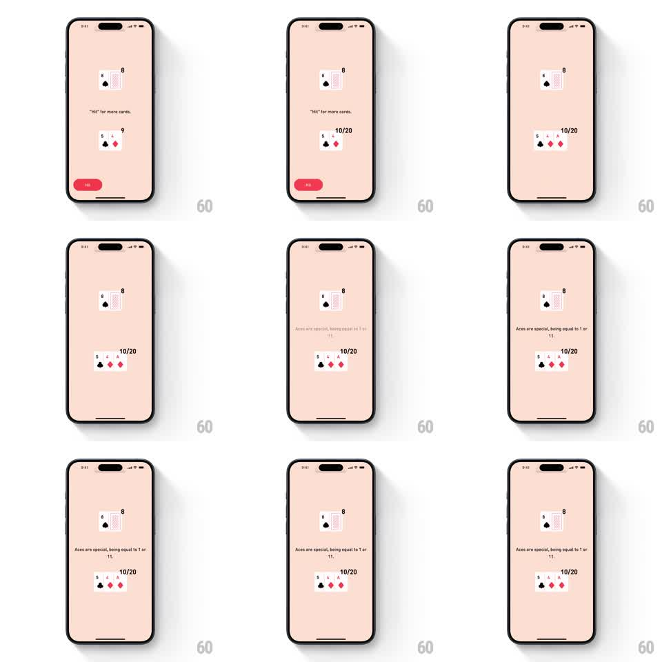

Media
Frame-by-frame

Rebuild this animation 1:1: BLKJCK's rule tooltip - as the dealt hand updates, a hint line slides and fades in explaining the move ("Hit for more cards.", "Aces are special..."), tracking the current game state.

Rebuild this animation 1:1: BLKJCK's rule tooltip - as the dealt hand updates, a hint line slides and fades in explaining the move ("Hit for more cards.", "Aces are special..."), tracking the current game state.
## Integration
Integration: stack-agnostic spec - springs given as stiffness/damping, timed motions as duration + curve; map every value to your framework and animation library of choice.
## Scene
Soft pink game table: the dealer's cards up top, the player's hand below with its running total (10/20), and a red Hit button. Hint text appears mid-screen when the state changes.
## Motion spec
Pattern: contextual tooltip slide-in, ~400ms per hint.
- When the hand changes, the current hint slides down and fades out (200ms, ease-in) as the new hint slides up from below and fades in (300ms, ease-out), the two crossing briefly.
- On a Hit, the new card slides into the hand first (300ms); the hint follows 150ms later, timed to land after the card settles.
- The hand total counts over to its new value in sync with the hint's arrival.
- Hints queue: a rapid second Hit replaces the entering hint mid-flight without a stutter.
## Calibration
- The hint is a narrator, not a popup - it never covers the cards or the button.
- Copy swaps are always paired (old out, new in); a bare fade-to-empty reads as a glitch.
## Reduced motion
Hints crossfade in place (250ms).
## Don't miss
- The entering hint comes from below every time; alternating directions reads as pagination.
- The hint's timing follows the card, not the tap - it reacts to the game state.